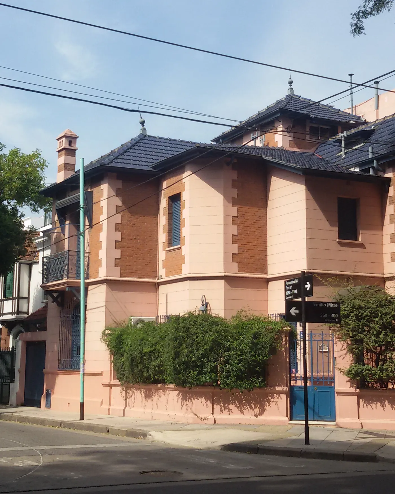
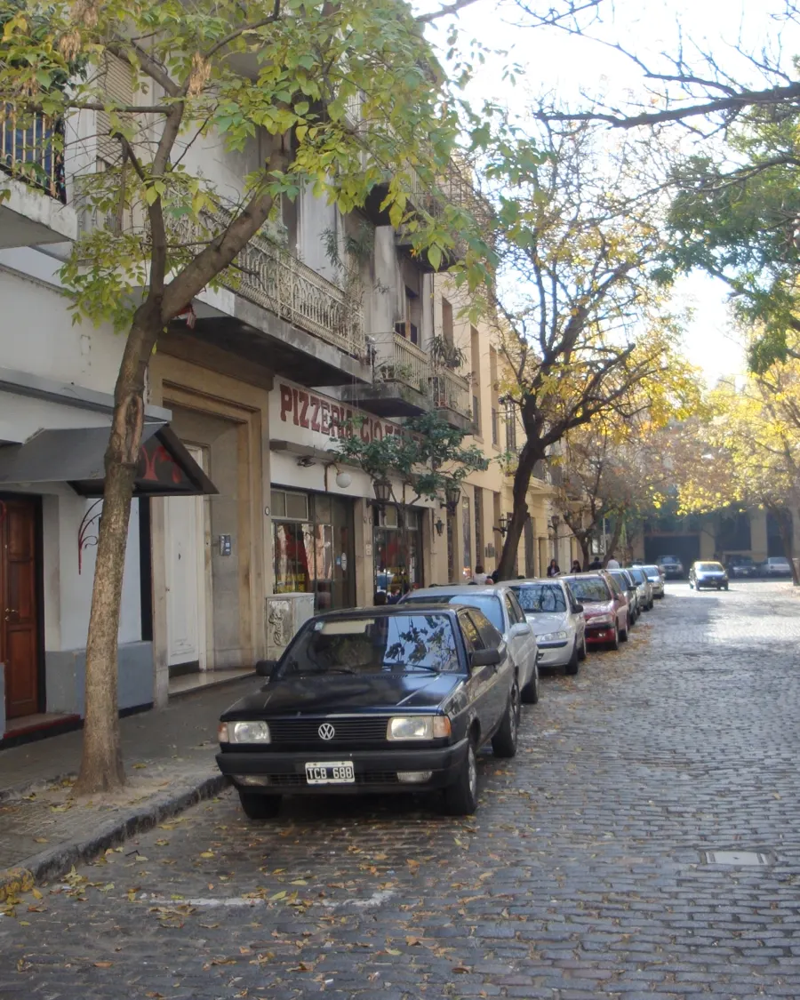
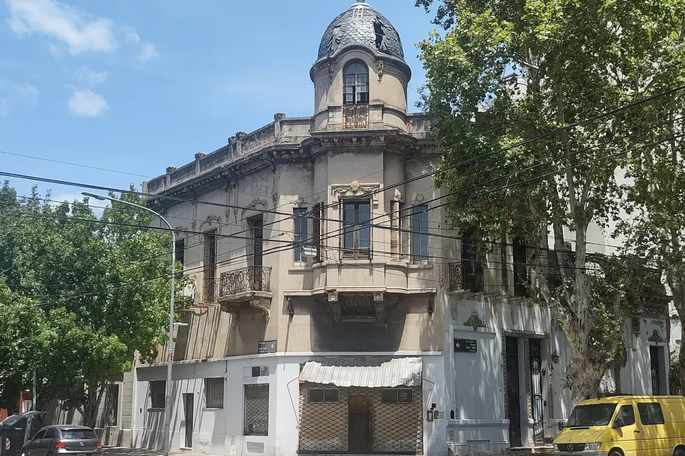
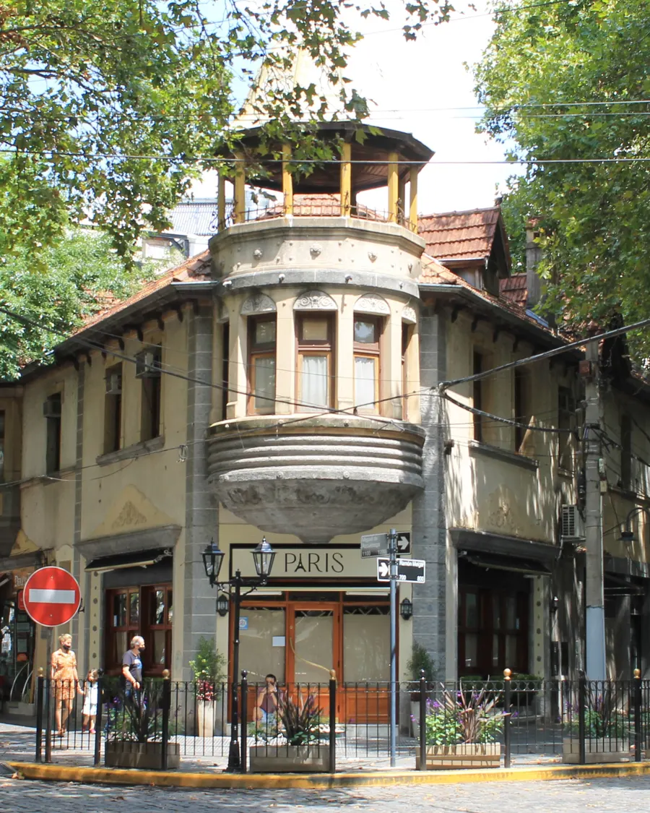

Cómo vendemos
Consejo Valterra
Tres decisiones que definen una venta.
Los criterios de nuestra serie de tips inmobiliarios, en el orden en que aparecen en una operación.
-
Antes de publicar
El precio
“El precio correcto no es el precio que querés. Es el precio que el mercado está dispuesto a pagar.”
Un precio correcto desde el comienzo genera consultas. Uno excesivo hace que la propiedad pierda tiempo, visibilidad y oportunidades.
Consejo Valterra · Tip #8Una buena tasación no busca decirte lo que querés escuchar. Busca el precio que permita vender.
-
Al mostrar la propiedad
La presentación
“La primera impresión vende.”
Una casa ordenada, limpia, luminosa y bien presentada ayuda al comprador a imaginarse viviendo allí.
Consejo Valterra · Tip #7No siempre hace falta una gran inversión: preparar bien la propiedad antes de mostrarla suele alcanzar para que destaque.
-
Al recibir ofertas
La oferta
“No todas las ofertas son iguales.”
- Precio ofrecido
- Forma de pago
- Plazos
- Financiamiento
- Condiciones
- Fecha de entrega
Consejo Valterra · Tip #9La mejor oferta no siempre es la más alta: es la que tiene más posibilidades de convertirse en una operación concreta.
Valterra Real Estate
Creamos valor a partir de cada oportunidad inmobiliaria
Propiedades, inversiones y desarrollos



Una mirada estratégica, profesional y personalizada para cada operación. Fotos de los barrios: no son propiedades de Valterra.
Servicios
Asesoramiento inmobiliario integral
- Tasaciones sin cargo
- El primer paso de cualquier venta o alquiler: saber a qué precio sale tu propiedad al mercado.
- Venta y alquiler de propiedades
- Te ayudamos a vender o alquilar, con asesoramiento personalizado y acompañamiento durante todo el proceso.
- Acompañamiento en la compra
- Te ayudamos a encontrar la propiedad que estás buscando.
- Asesoramiento personalizado
- Una mirada estratégica, profesional y personalizada para cada operación.
- Inversiones
- Oficinas, locales y viviendas. Comprender cómo cambia una zona y anticipar su impacto en el mercado, para tomar mejores decisiones.
Análisis · Septiembre 2026
Distrito IA: el Microcentro se transforma.
El Gobierno de la Ciudad envió a la Legislatura un proyecto de ley para crear el Distrito de Inteligencia Artificial en el Microcentro: atraer empresas, inversiones y talento, y promover la reconversión de la zona con distintos incentivos.
Pero la transformación no se trata solamente de tecnología. Se trata de personas, empresas, consumo, servicios, conectividad y nuevos usos para una de las áreas más emblemáticas de la Ciudad.
Leer el análisis completo- Oficinas
- Locales
- Viviendas
- Inversión
- Nuevos usos. Nuevas oportunidades.
El centro porteño desde el Palacio Barolo · Foto: Leo.silvero94
Campos e inversiones rurales
Donde hay tierra, hay trabajo. Donde hay trabajo, hay futuro.
Acompañamos y valorizamos las oportunidades que nacen de nuestra tierra, conectando campos, inversiones y proyectos con una mirada estratégica y de largo plazo.
Campo en la provincia de Buenos Aires · Foto: lrargerich
Barrios
CABA y Gran Buenos Aires






Los 48 barrios de la Ciudad y el Gran Buenos Aires.
Si tu propiedad está en el Gran Buenos Aires, escribinos igual: también trabajamos ahí.


Tasaciones sin cargo